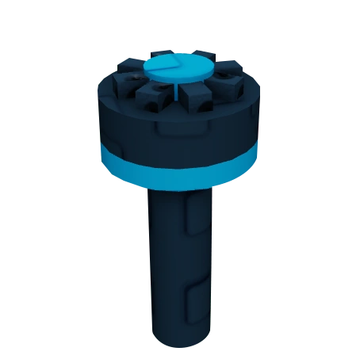
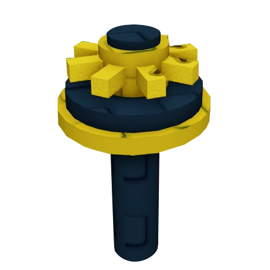

Top 5 Best Sprinklers in Grow a Garden (2025)
1. Master Sprinkler
The Master Sprinkler is the ultimate sprinkler in Grow a Garden, offering the highest boosts to your crops. It significantly increases crop size, growth speed, and mutation chances, making it a must-have for serious farmers aiming for the best harvests.
- Tier: Divine
- Cost: 10,000,000 Sheckles or 199 Robux
- Duration: 10 minutes
- Obtained from Gear Shop (1.4% chance) or Moles
- Effect: Triples crop size and boosts mutations
2. Godly Sprinkler
The Godly Sprinkler is a powerful choice for enhancing your crops. It doubles crop size and speeds up growth while improving mutation rates, making it a popular mid-tier option.
- Tier: Mythical
- Cost: 120,000 Sheckles or 149 Robux
- Duration: 5 minutes
- Obtained from Gear Shop or Moles
- Effect: Doubles crop size and boosts mutations
3. Advanced Sprinkler
The Advanced Sprinkler provides a solid boost to crop size and growth speed. It is ideal for early to mid-game players looking to increase efficiency without the high cost of the top-tier sprinklers.
- Tier: Legendary
- Cost: 50,000 Sheckles or 99 Robux
- Duration: 5 minutes
- Obtained from Gear Shop or Moles
- Effect: Boosts crop size and growth speed
4. Basic Sprinkler
The Basic Sprinkler is a great entry-level sprinkler that helps speed up crop growth and slightly increases crop size. It's perfect for beginners wanting to get started with sprinkler boosts.
- Tier: Rare
- Cost: 25,000 Sheckles or 79 Robux
- Duration: 5 minutes
- Obtained from Gear Shop or Moles
- Effect: Increases crop size and growth speed
5. Grandmaster Sprinkler
The Grandmaster Sprinkler is a rare and powerful sprinkler that combines the benefits of all other sprinklers with additional unique bonuses, making it the top choice for dedicated players.
- Tier: Prismatic
- Cost: Varies (special events or achievements)
- Effect: Combines all previous sprinkler effects with extra boosts
- Obtained through special events or achievements